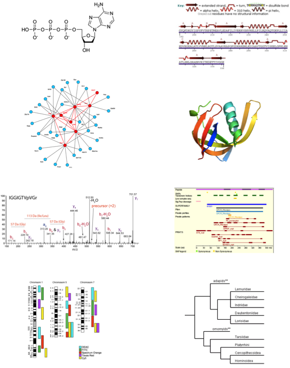
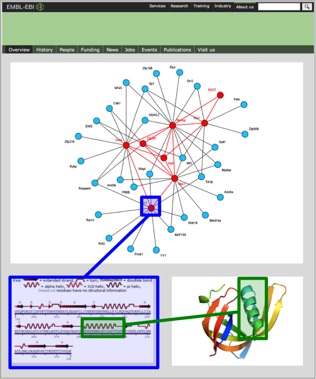
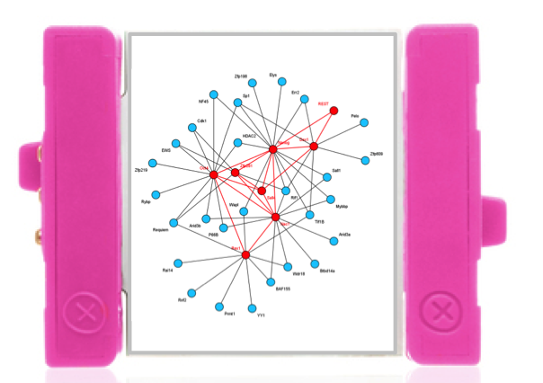
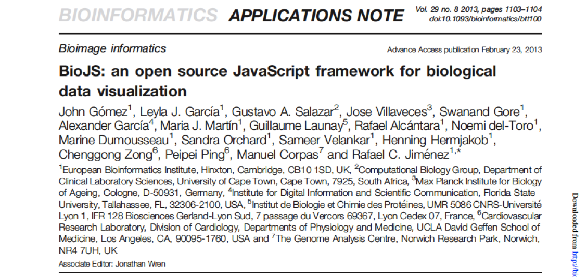
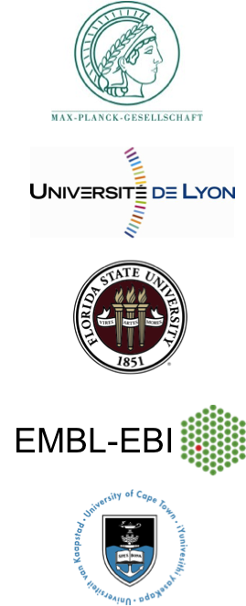
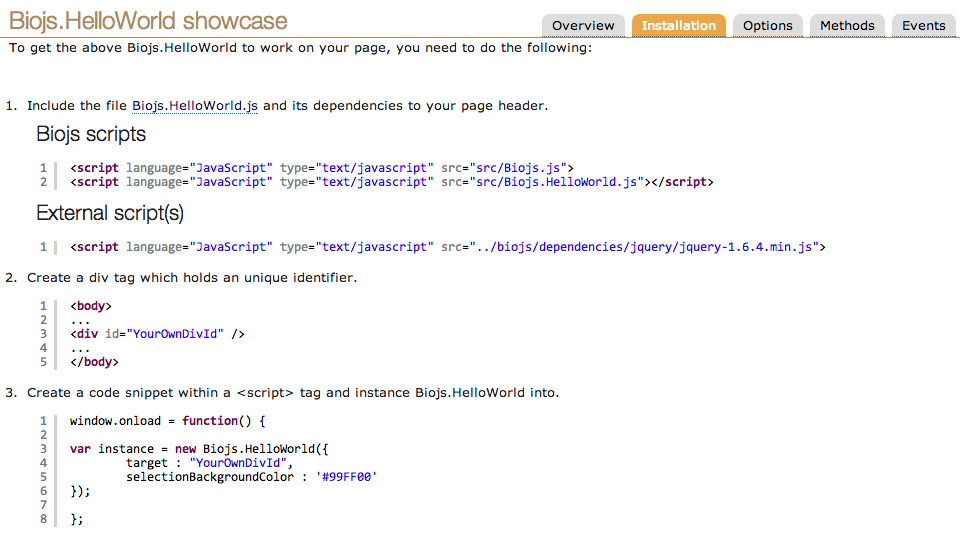
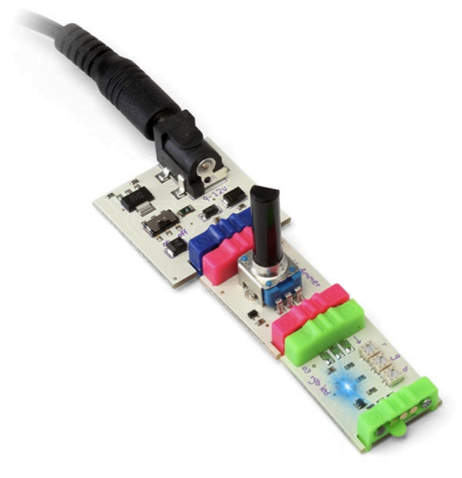
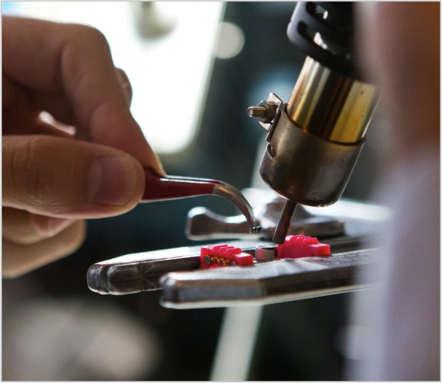
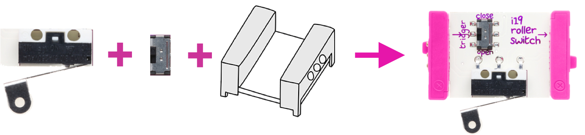

an open source standard for biological visualisation
Monday, 19 May 2014
→ and ← to go next and previous
Overview
- Motivation
- BioJS Q&A: What, When, Where, Who
- How to use
- BioJS in Action
- How to create
- Benefits
Motivation
Building Blocks
Motivation
Little Bits
electronic modules that snap together�...
Motivation
Little Bits
...to create applications�.
Motivation
Applying the concept in bioinformatics�

Components
Components

Application
Application
BioJS: Questions & Answers
What?�

A collection of JavaScript components following a common guideline to present biological information.
A collection of JavaScript components following a common guideline to present biological information.
BioJS: Questions & Answers
What?�
BioJS: Questions & Answers
When?�
- Aug 2011 – Started as student project
- Dec 2012 – Registry released at the EBI
- Feb 2013 – Published in Bioinformatics�

BioJS: Questions & Answers
When?�
- 12 component papers
- 1 BioJS community article
- Release in bulk by February 2014
BioJS: Questions & Answers
Where?� - to Use:
BioJS: Questions & Answers
Where? - to Create:�
BioJS: Questions & Answers
Who?�
Community

| USE | CREATE |
|---|---|
| Anyone | Mainly Web Developers |
How to use it
Hello World
- Go to the registry: http://www.ebi.ac.uk/Tools/biojs/registry/index.html
- Chose a component. eg. Hello World
- Follow the Instructions under the installation tab. eg.

How to use it
Hello World
Just try choosing a component from the repository
BioJS in Action
Chromosome
Here is a component displaying the bands of chromosome 8
Besides adding the dependencies, this is all the javascript need it:
var chromosome= new Biojs.Chromosome({
target: "chromosome",
dasSource: "http://www.ensembl.org/das/Homo_sapiens.NCBI36.karyotype/",
dasSegment: "8",
includeSelector:false
});
BioJS in Action
GC Content (band q11.22)
var gc_content = new Biojs.DNAContentViewer({
target: "gc_content",
selectionBackgroundColor: '#99FF00',
dataSet: "chromosome_8_band_q11.22.txt"
});
BioJS in Action
DAS Feature viewer (Protein A1KZ92)
var myPainter = new Biojs.DasProteinFeatureViewer({
target: "das_div",
segment: "A1KZ92"
});
BioJS in Action
Human Protein Atlas summary (A1KZ92)
var hpa = new Biojs.HpaSummaryFeatures({
target: 'hpa_div',
hpaDasUrl: 'http://das.proteinatlas.org/das/proteinatlas/features?segment=A1KZ92',
width: '585px',
imageWidth: '150px'
});
BioJS in Action
Protein Interactions (Some Cardiac related proteins)
var interactions = new Biojs.InteractionsD3({
target: "interactions"
});
interactions.addProtein({ "id":"A1KZ92","showLegend":true,"typeLegend":"id"});
interactions.addProtein({ "id":"Q14896","showLegend":true,"typeLegend":"id"});
...
interactions.addInteraction("Q14896","A1KZ92" ,{score:1.0});
...
How to create

Easy to use
Easy to use

not that easy to create�
How to create

Process:
How to create
Component layers
How to create
Communication between components: Event handling

Benefits
Create
- ♦ Enhance the visibility of your widget
- ♦ Make components not just for you but for the community
- ♦ Isolate visualization from your web framework
- ♦ Have a minimal common code structure
- ♦ Components easy to take over since they need to be well documented
- ♦ Easy to add functionality by extending a component
- ♦ Out of the box API documentation for your component�
Benefits
Use
- ♦ A registry to find a list components
- ♦ Components include an example to see and test
- ♦ Different components which are installed same way
- ♦ A common API documentation for all the components
- ♦ Visualize like other groups/institutions
- ♦ Adapt the component to your visual styles
Benefits
As an organization
- ♦ Follow minimal common guidelines
- ♦ Aim at having common visualisations
- ♦ Encourage developers to work in common implementations
- ♦ Let the community visualize like your institution does
- ♦ Make people aware of what components are developed�
The BioJS project members and collaborators �